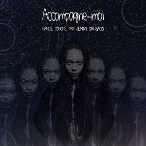

Une bande sonore pour la pièce de théâtre ACCOMPAGNE-MOI
Une introduction à son prochain album...
Montréal, le 12 mars 2018 - Après avoir été en nomination au Gala du cinéma québécois, remporté le prestigieux prix Canadian Screen Award à Toronto et le CIMM à Chicago en 2016, l’auteure-compositrice-interprète Jenny Salgado est de retour avec une nouvelle bande originale mais en théâtre cette fois avec la trame sonore de la pièce « Accompagne-moi ». Présentée au Gesù en février dernier, « Accompagne-moi » est une pièce créée en Guyane, chapeautée par la compagnie française Maztek et la chorégraphe Anne Mayer, écrite et mise en scène par l’auteure québécoise BerekYah.
On y retrouve dix titres, certains instrumentaux, certains avec voix qui racontent une histoire que Jenny a faite sienne et qui devient l’introduction de son album à venir. Dans sa signature qui lui est propre et unique, on s’y promène dans les genres musicaux et dans une ambiance dynamique, ponctuée de solides chansons et de textes littéraires imposants. Jenny retourne aux sources avec un son urbain où hip hop, rap, slam, root s’imposent.
« Ça été une expérience tout à fait incomparable et inattendue pour moi et j’ai vécu un trip de malade avec mon complice André Courcy à faire cette création que je présente comme la première partie, le prélude de mon nouvel album. Je crois bien que c’est la meilleure œuvre musicale que j’ai composée à ce jour. »
Jenny Salgado
Jenny Salgado s’est récemment retrouvée dans quelques articles, parmi les tops de la musique québécoise au féminin. Jenny, qui a fait partie du mythique groupe Muzion à la fin des années 90, ne cesse de s’impliquer dans le domaine, social, culturel, politique et de multiplier les diverses collaborations musicales. Elle prépare un nouvel album et présente aujourd’hui un avant-goût avec cette bande sonore.

LA PIÈCE « UNE VOIX » EST DISPONIBLE SUR LA PLATEFORME 45 TOURS.
La bande sonore de « Accompagne-moi » sera disponible en ligne sur toutes les plateformes web dès le 16 mars 2018 !